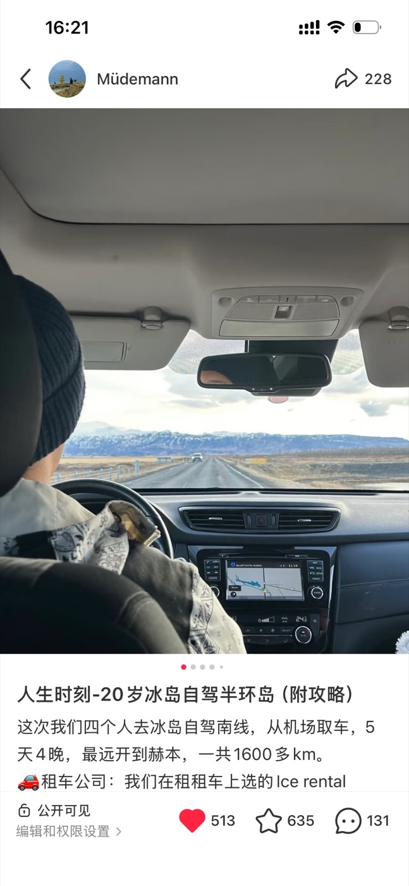

冰岛 · 南线
二十岁，在冰岛开了 1,600 公里
四个人，五天四晚。我们从机场取车沿冰岛南线开，最远到赫本，全程走了 1,600 多公里。

从机场取车
车是在租租车上订的，选的 Ice Rental，到机场直接取。第一页那张照片是在车里拍的，屏幕上的导航还亮着，前面一条直路通到雪山脚下。
最远开到赫本
我们从机场往南线开，最远就到赫本（Höfn）。那是冰岛东南部一座靠近瓦特纳冰川的小城。 冰岛南部旅游局的赫本资料 ↗
五天跑了多少路
五天一共开了 1,600 多公里，算下来平均每天 320 多公里。如果你也想五天走完南线，可以先按这个数估一下要留多少时间开车。